Mamparas.
En nuestro showroom de Barcelona, te ofrecemos una amplia gama de mamparas para duchas y bañeras de principales marcas.
Cabinas y cerramientos para duchas y bañeras, diseños clásicos y modernos, modelos retros, mamparas integradas con el resto del baño, con perfilería minimalista, en acero inoxidable y vidrio templado de seguridad… Distribuimos incluso mamparas a medida para duchas y bañeras de diseño y máxima calidad.
Una amplia selección de mamparas de baño que se adaptan a cualquier gusto, sea cual sea el espacio del cuarto de baño del que se dispone, y los requisitos del cliente tanto si hablamos de hoteles, u otros establecimientos, como si se trata de viviendas particulares.
Ven a verlas al showroom de Barcelona, o si lo prefieres mira la selección de imágenes en nuestras redes sociales. También puedes registrarte en la newsletter. A continuación, sigue leyendo y conoce alguna de las últimas novedades en mamparas de diseño.
Marcas en el showroom
- Iakus
- Spazia
- Glassinox
- Alex Ban
- Novellini
- Lasser
Y si lo que buscas no está en exposición, lo buscamos en la Bagnoteca.
Novedades 202620

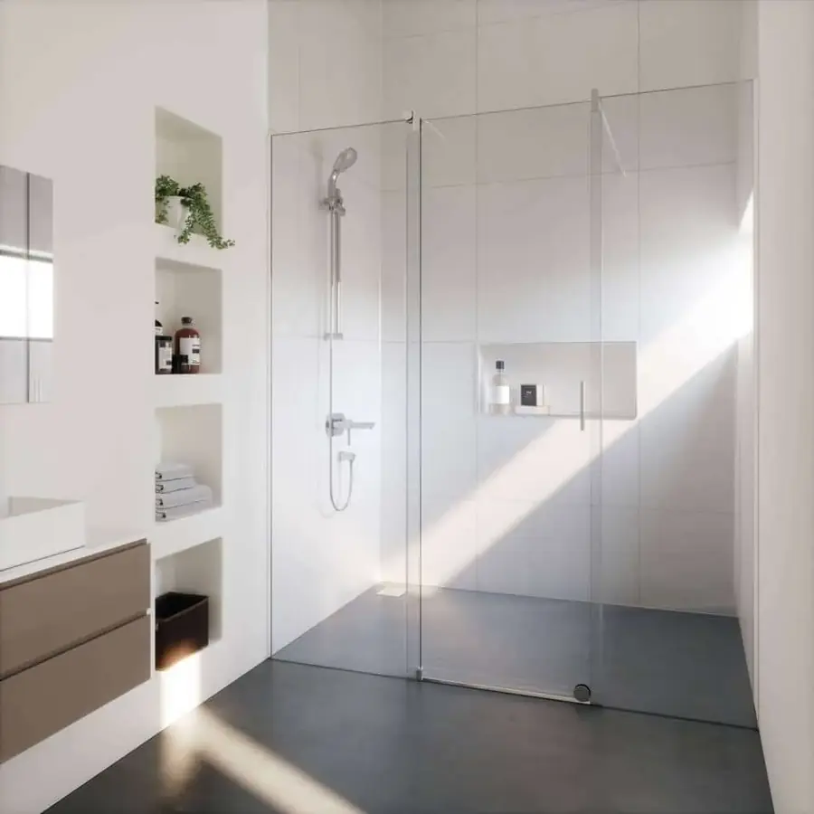
MamparasMamparas de ducha con puertas correderas Esfera - Lasser
Las mamparas Esfera de Lasser ofrecen un diseño elegante y funcional para cualquier baño. Fabricadas con materiales de alta calidad, con herrajes en acero inoxidable, proporcionan durabilidad y resistencia.
Su sistema de puertas correderas maximiza el espacio, ideal para baños de tamaño reducido. Con detalles cuidadosamente diseñados, añaden un toque contemporáneo a tu espacio.
Además, su instalación es sencilla y ajustable, adaptándose a diversas configuraciones. La gama tiene varios modelos a elegir, sin guía superior, con sistemas combinados entre puertas fijas y correderas, y está disponible en varios matices y acabados.

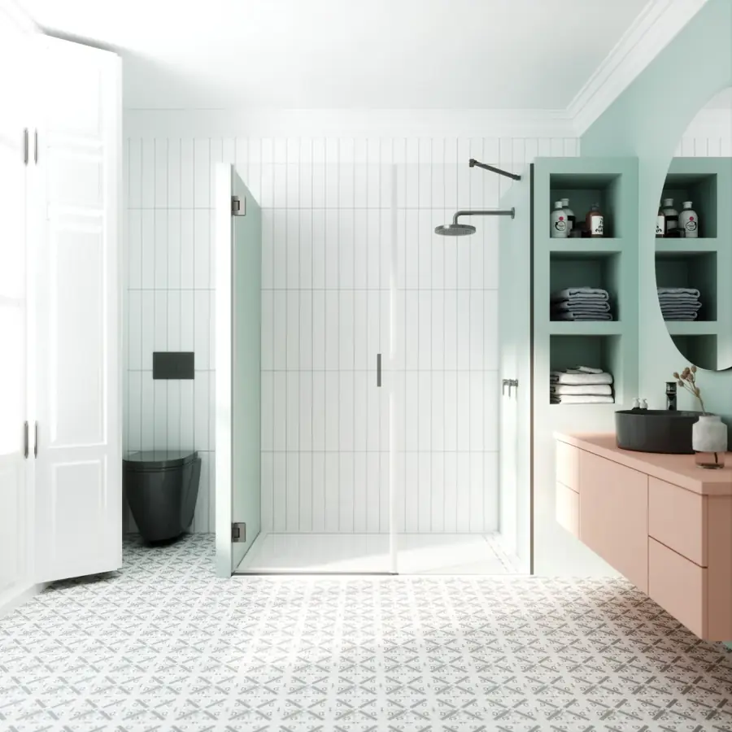
MamparasMamparas para bañera y ducha con puertas practicables Black - Lasser
Descubre la sofisticación contemporánea con las mamparas de la gama Black de Lasser para ducha y bañera. Una colección que fusiona líneas modernas con detalles elegantes, ofreciendo un estilo vanguardista adaptable a cualquier decoración.
Fabricadas con materiales premium como aluminio anodizado negro y vidrio templado de seguridad, garantizan durabilidad y transparencia cristalina.
Su funcionalidad innovadora incluye sistemas de apertura suave y cierre hermético con bisagras y manetas de diseño. Personalizables para adaptarse a cualquier estilo de baño, estas mamparas están respaldadas por una garantía de calidad, asegurando una experiencia de lujo confiable.

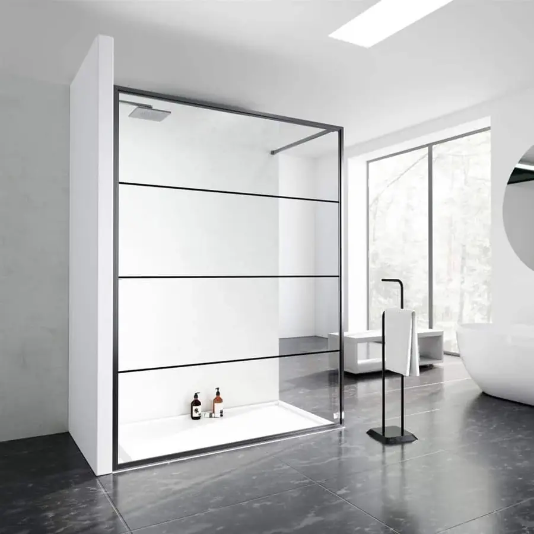
MamparasMamparas de ducha con sistema modular fijo - Futura - Lasser
Lasser presenta “Futura” su colección de mamparas para ducha con sistemas modulares fijos.
La nueva línea de la marca está disponible en dos modelos distintos, el modelo “Futura Norma” compuesto por un cristal fijo más una barra perpendicular a la pared, y el modelo “Futura Sense” formado por dos cristales fijos más una barra en forma de T.
En ambos casos, las mamparas están fabricadas con cristeles templados de 8mm de espesor y acabados en aluminio anodizado negro. Además, esta colección permite ser personalizada con distintos modelos de serigrafía en los vidrios.
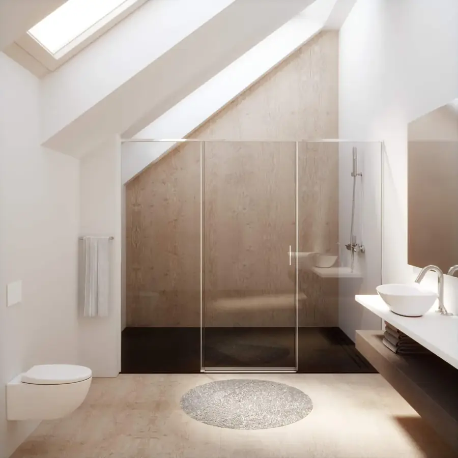
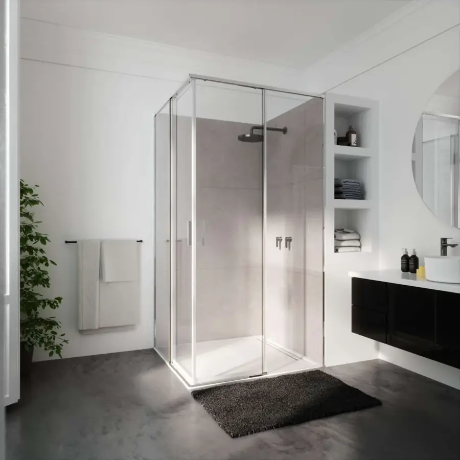
MamparasMamparas de ducha a medida Slim - Lasser
Lasser sorprende con su colección SLIM, una línea de mamparas y puertas a medida que se adaptan angularmente a cualquier baño.
SLIM está hecha a partir de vidrio templado de 6mm, tratado durante el proceso de fabricación para ofrecer varios diseños: cristal matizado, con bandas horizontales, rayas verticales, etc. Además, la colección puede encontrarse en varias configuraciones, fijas y correderas, adaptadas a toda necesidad de medida y espacio.
Con detalles disponibles en varios acabados y colores, la marca se posiciona una vez más como líder indiscutible en diseño de vanguardia sin renunciar a la máxima calidad técnica.
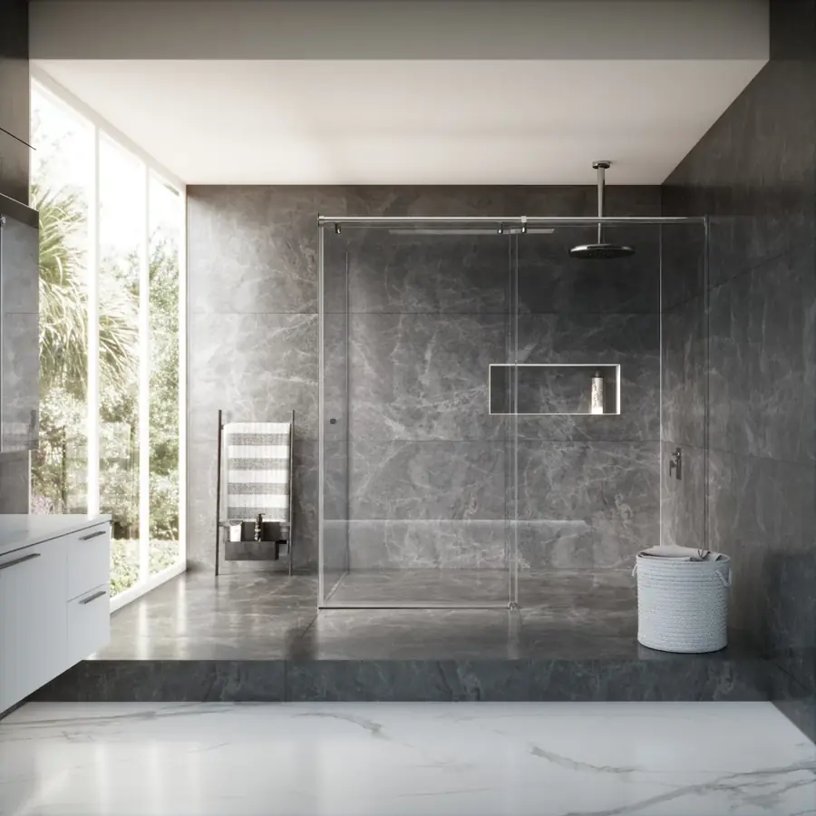
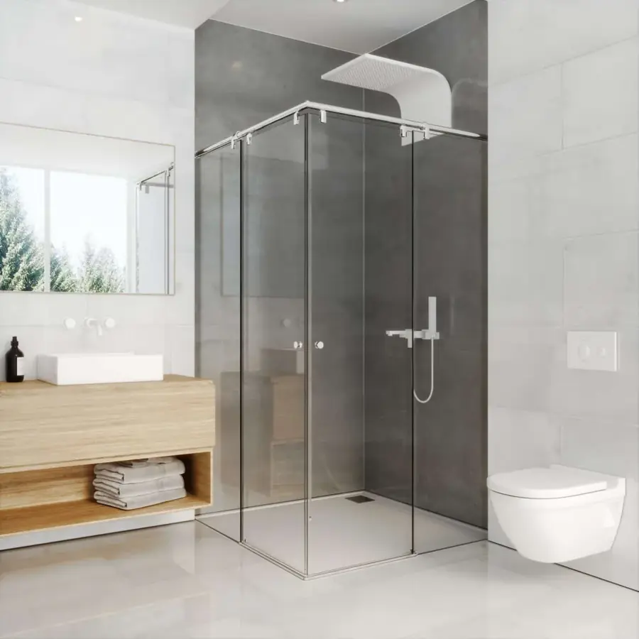
MamparasMamparas de ducha con puertas correderas Elena - Lasser
Lasser presenta su nueva colección “Elena”, mamparas con puertas correderas para duchas y bañeras en acero inoxidable y vidrio templado.
La colección presenta varios modelos disponibles. Todos ellos ofrecen infinitas combinaciones que se adaptan a las necesidades espaciales de cada estancia: con cristales fijos, con una o dos puertas, con más o menos anchura, etc.
Elena recoge la elegancia del país griego, con acabados de diseño pensados al detalle como sus guías superiores y los cierres imantados de las puertas.
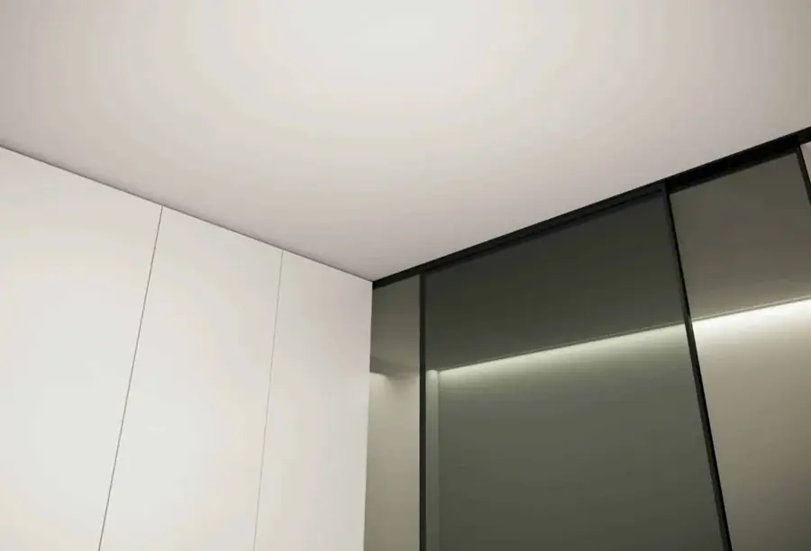
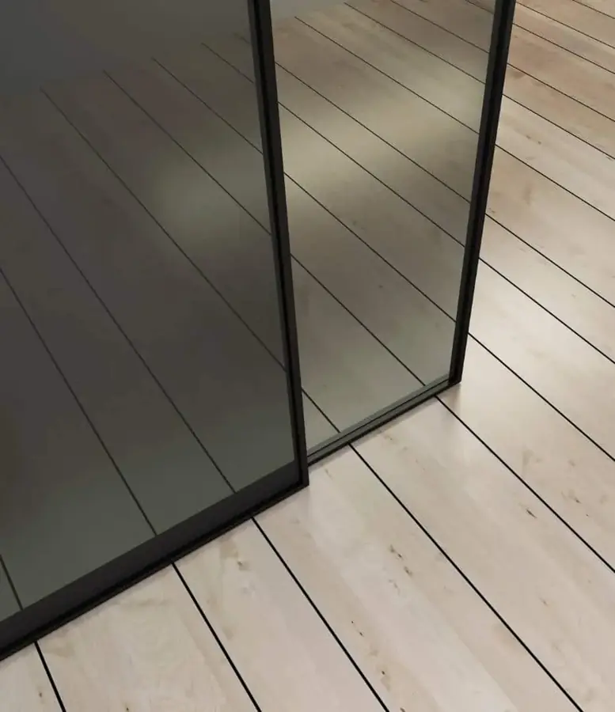
MamparasMamparas de ducha de aluminio y vidrio Minium+ Holder y Minium+ Slidd – Iakus
La marca referente en mamparas de baño para hoteles y viviendas presenta dos de sus colecciones más sofisticadas en las que el aluminio y el vidrio se funden para ofrecernos la mayor elegancia en nuestras estancias.
Aunque entre ambas se parecen, la colección “minium+holder” se compone por paneles verticales con perfiles vistos en aluminio, mientras que “mínimum+slidd” tiene dos estilos de aplicación In/Out con una guía como perfil que puede ir oculta bajo techo o a la vista fija en pared.
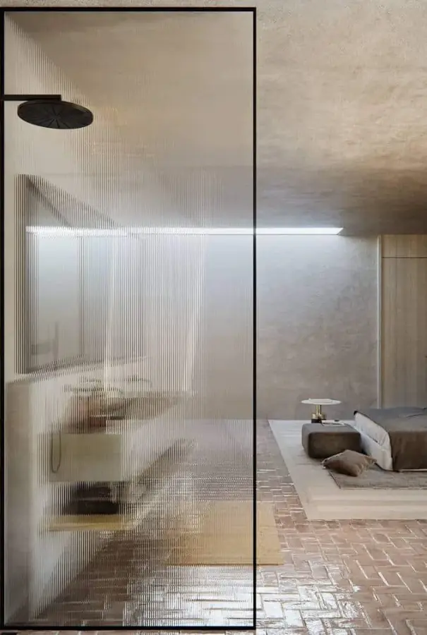
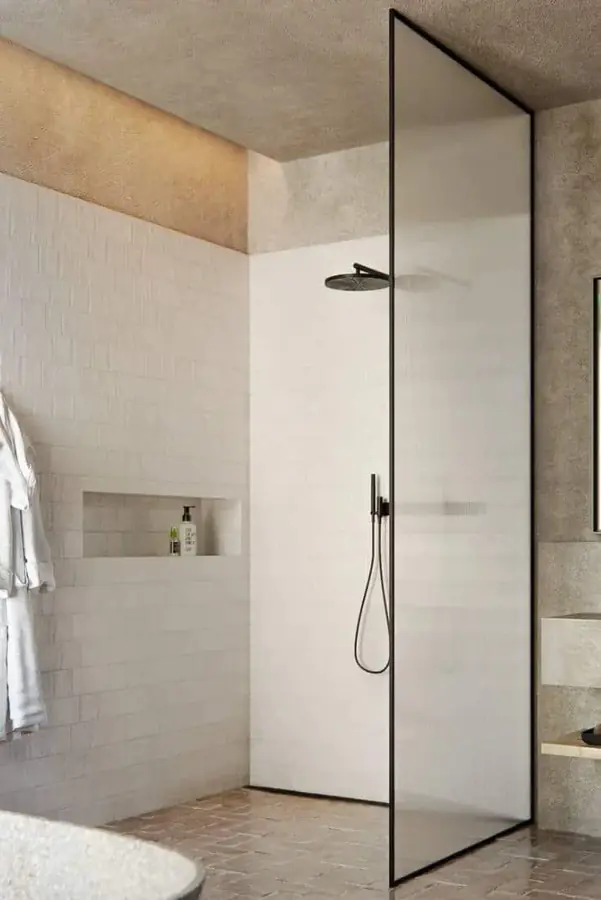
MamparasMamparas de ducha Minium Holder – Iakus
Con objetivo en adaptarse a todo tipo de proyectos, Iakus lanza una colección especialmente pensada para espacios que requieren piezas más pequeñas como separadores espaciales.
“Minimum Holder” se caracteriza por sus piezas verticales en vidrio y con perfiles en aluminio negro. En todas sus posibilidades y medidas, se respira el estilo sobrio y purista que define a la marca catalana.
Iakus vuelve a sorprender con esta línea de mamparas para baño, pensadas tanto para el sector hotelero, residencial e interiorismo privado.
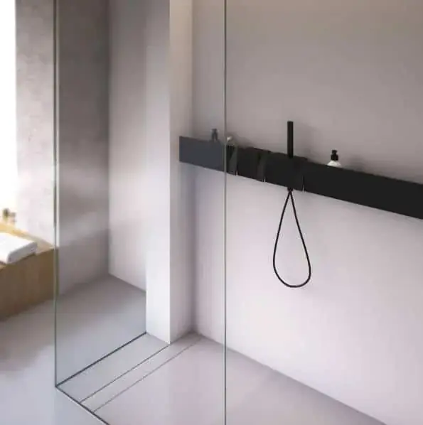
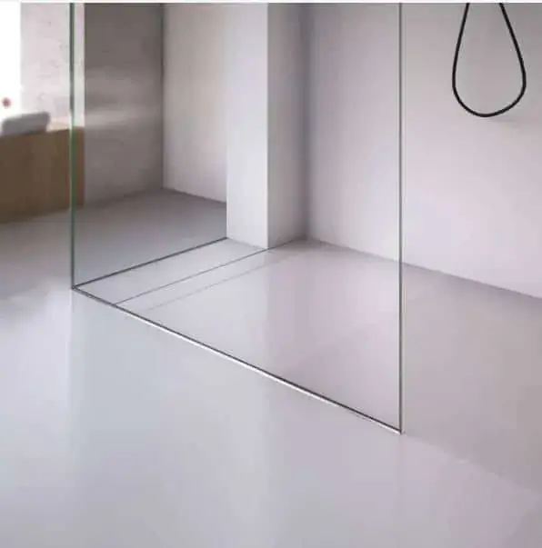
MamparasMamparas de ducha Pura In – Iakus
Descubre la colección “Pura in” de Iakus, una sorprendente línea de mamparas para baño que consigue camuflarse entre el resto del mobiliario del baño. Pura in es minimalismo y elegancia, dos valores que la marca tiene muy presentes durante todo su proceso de diseño, innovación y fabricación de producto.
Trabajando con los mejores materiales del mercado, esta colección de paneles verticales está hecha en vidrio de alta calidad y, sin quitar protagonismo a la gran pieza de cristal, rematada con finos perfiles en aluminio.
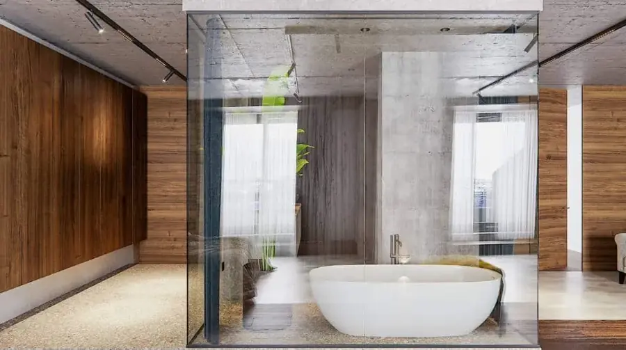
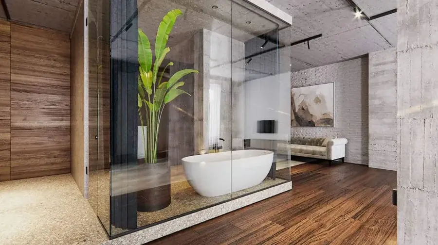
MamparasMampara Pura Out - Iakus
Iakus lanza su nueva colección de mamparas “pura out”, una colección donde la amplitud se convierte en el eje central.
Formada por grandes piezas de vidrio combinables con perfil visto, “pura out” envuelve completamente cualquier baño pasando a ser la parte más especial de la estancia o habitación.
Gracias a su aspecto transparente, su instalación a techo lejos de limitar el espacio incrementa la sensación de extensión y libertad de movimiento haciendo del baño un área diáfana que se funde con la zona de descanso.
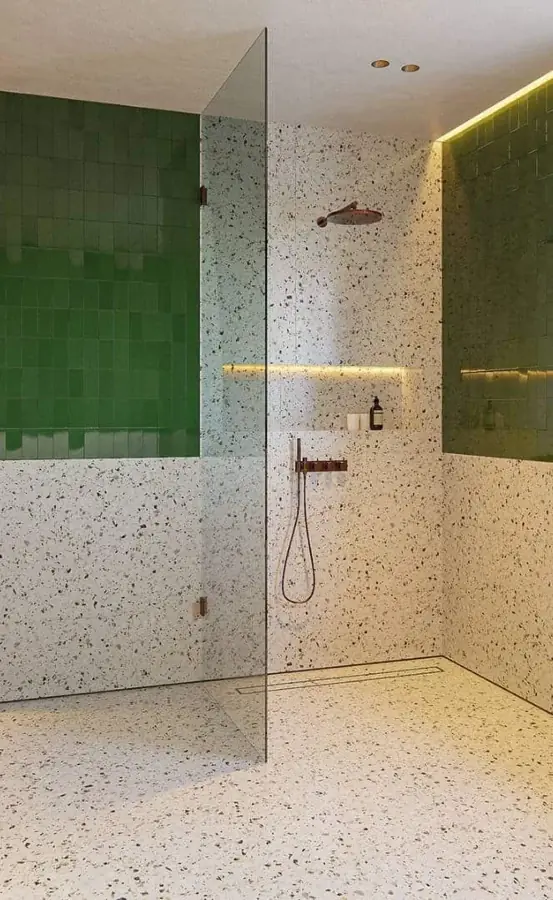
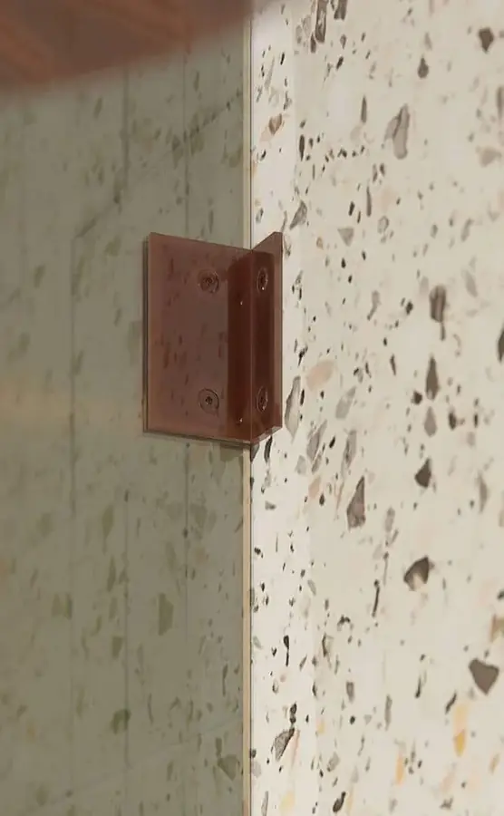
MamparasMampara Micro Holder - Iakus
La firma catalana de referencia en fabricación e instalación de mamparas para baño vuelve a sorprender con su colección “micro holder”.
Iakus sigue apostando por un diseño elegante, sobrio y en tendencia creando espacios agradables que ayudan a llevar una rutina diaria confortable y en calma.
Las nuevas mamparas de esta colección se caracterizan por tener una firme sujeción a la pared, gracias a sus escuadras con acabados en aluminio. Sus grandes piezas verticales, transparentes, funcionan como separadores para dividir espacios dentro del mismo baño, separando así la zona de aguas del resto.
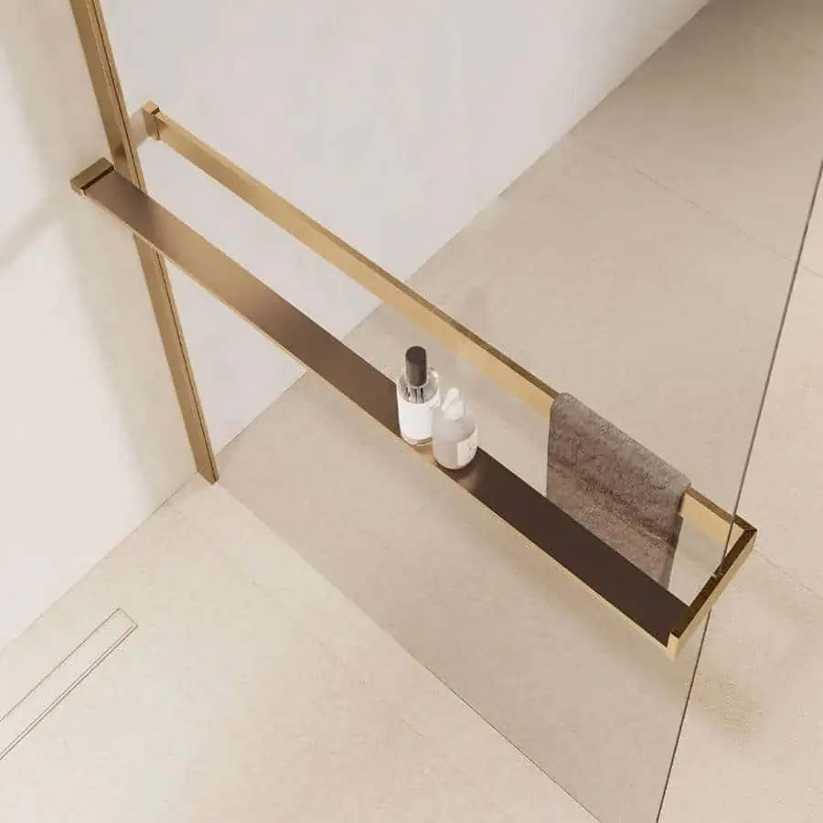
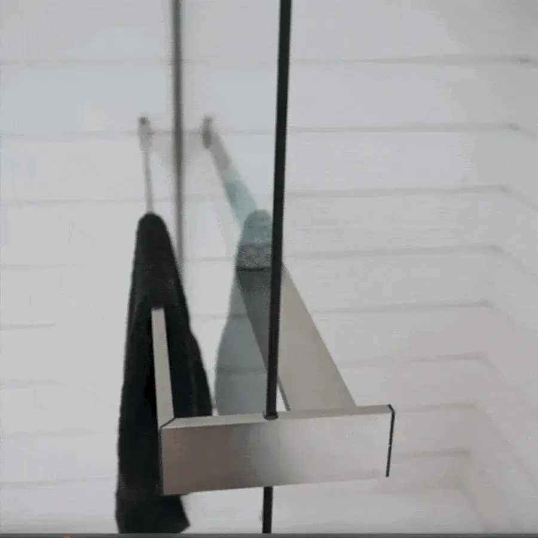
MamparasMamparas de ducha abiertas Kuadra H - Novellini
La marca italiana de referencia en fabricación de piezas para baño presenta su última solución en mamparas de ducha, la colección “Kuadra H”.
Bajo este concepto minimalista, la mampara se confunde con el resto de accesorios y mobiliario. Una pieza vanguardista capaz de aportar exclusividad y estilo a la estancia.
Con el diseño como su máximo estandarte, Novelli nos sorprende una vez más con su alta calidad. Los modelos de esta colección no solo ofrecen una funcionalidad óptima, sino que también proporcionan una amplia variedad de accesorios perfectamente combinables entre sí.
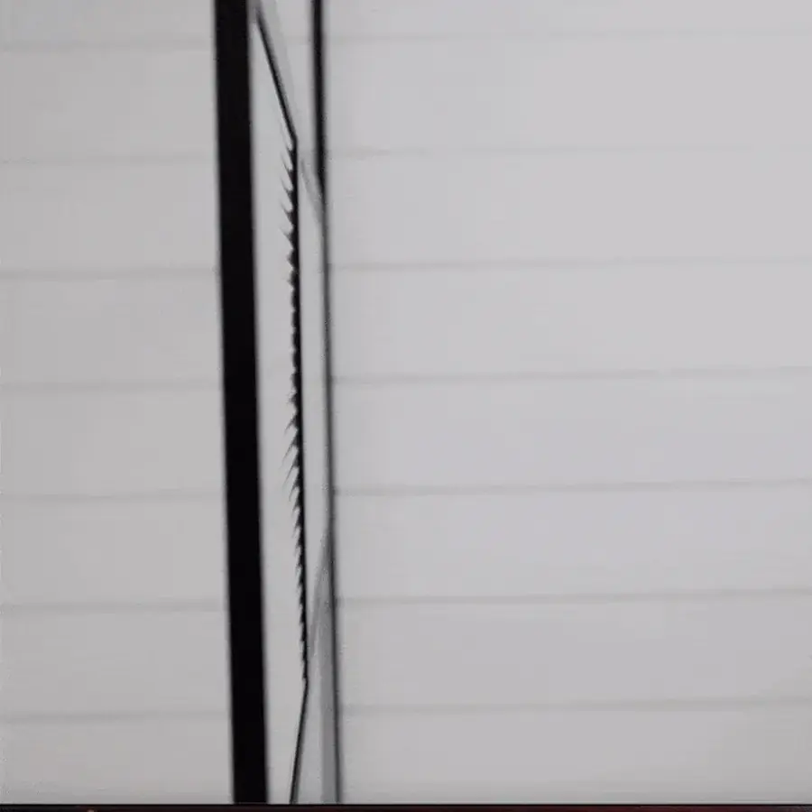
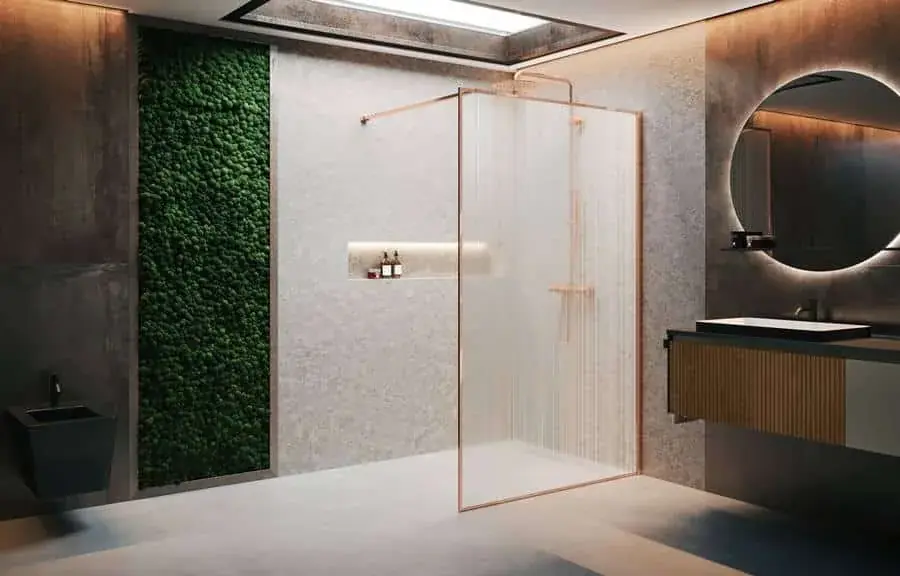
MamparasMampara de ducha abierta H ART- Novellini
La mampara de ducha abierta H ART de Novellini redefine el diseño del baño con estilo industrial y funcionalidad mejorada.
La nueva colección destaca por su barra estabilizadora y sus cristales. Gracias a la combinación de los moldeados y grabados de su superficie, la mampara se convierte en la auténtica protagonista del espacio.
H ART eleva el estándar de elegancia y sofisticación con acabados en metal pulido y cepillado para un aspecto moderno y cuidado.
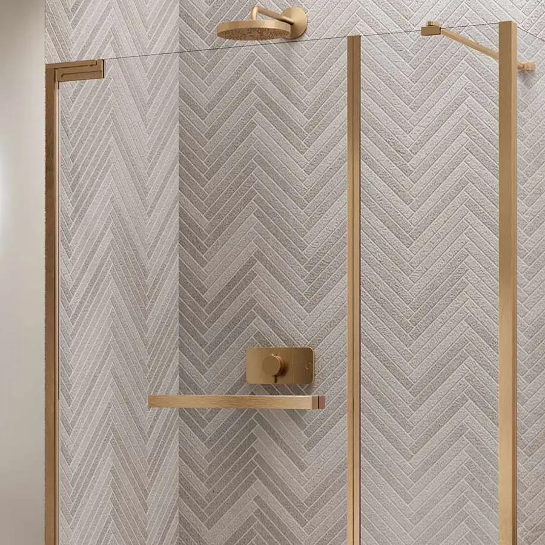
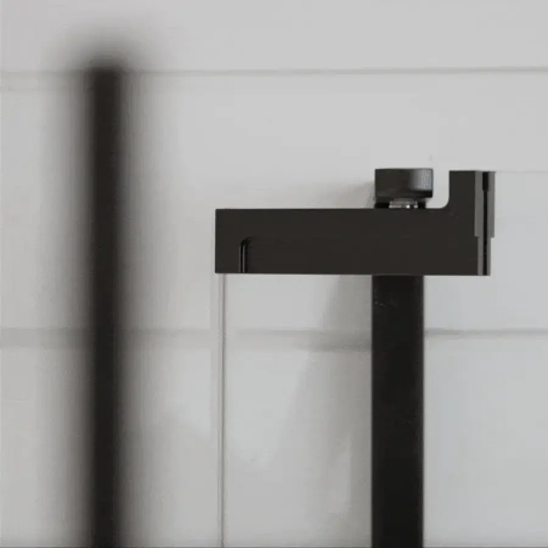
MamparasMamparas de ducha batientes N180- Novellini
Novellini destaca con su colección de mamparas de ducha batientes N180. Una colección donde la estética es protagonista desde la elección de los materiales hasta la forma y proporción en que se han usado.
Sus marcos y detalles de diseño, disponibles en varios acabados metalizados, provocan un reflejo luminoso que irradia una falsa claridad a la estancia dotándola de sofisticación y calidez.
En términos de innovación, este modelo destaca por su integración tecnológica. La marca ha incorporado a su funcionalidad un nuevo cierre automático de 90º para puertas batientes, impulsado por un sistema de imanes invisibles.
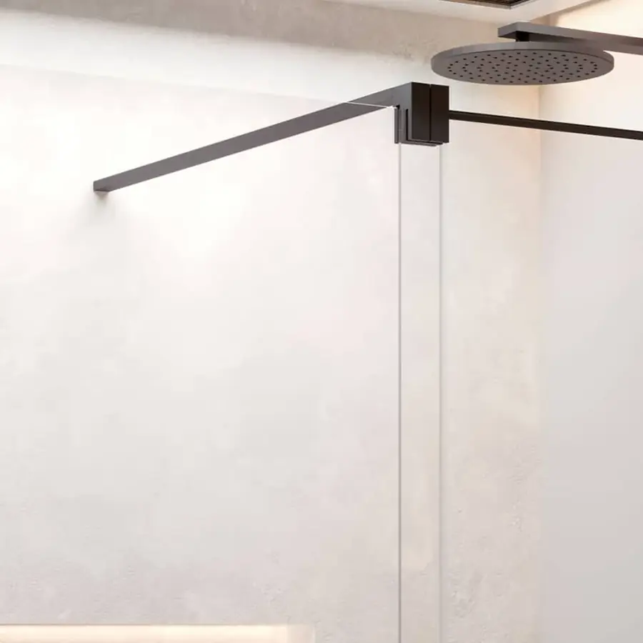
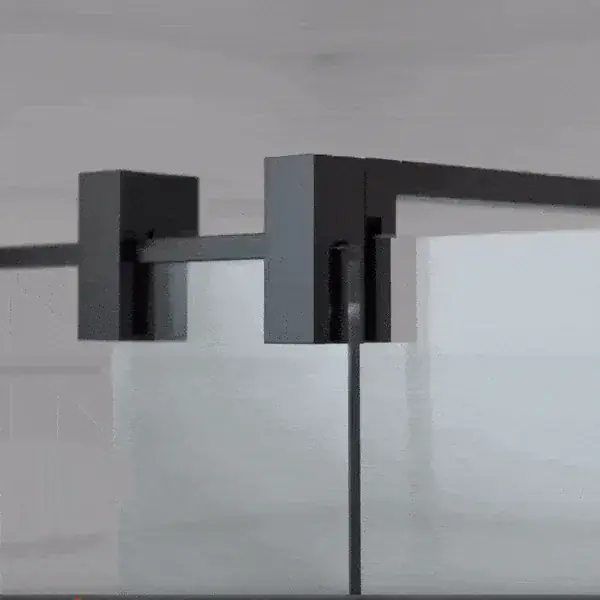
MamparasMamparas de ducha abiertas, H STYLE - Novellini
Experimenta la fusión perfecta entre elegancia y practicidad con las Mamparas de Ducha Abiertas H STYLE de Novellini.
Su diseño minimalista y arquitectura adaptable las convierten en la opción ideal para cualquier espacio, siendo especialmente adecuada para hoteles y zonas residenciales.
Con un aspecto limpio y moderno donde las formas líneas son el centro, el modelo H STYLE es la solución perfecta para el mantenimiento de cualquier baño: lleva integrado un nuevo sistema de desbloqueo que permite una fácil limpieza y aporta movilidad a la apertura de la puerta, que ahora se desliza sin esfuerzo sobre las guías.
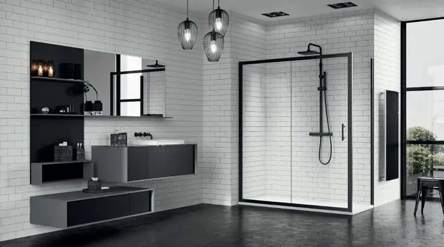
MamparasMamparas de diseño para ducha Zafiro – Novellini
La nueva serie de Mamparas de ducha “Zafiro” combina diseño y practicidad. Novellini apuesta por la tecnología e innova en sus modelos con avances que se convierten en beneficios y facilidades de uso para el usuario.
Disponible con acabados en plata, negro y blanco, la colección permite ser personalizada tanto a nivel visual como estructural: sistemas correderos, puertas plegables, batientes…
Con un diseño homogéneo del marco perimetral, Zafiro ofrece 5 tipos de cristal de 6mm y 4 acabados de perfil neutro.
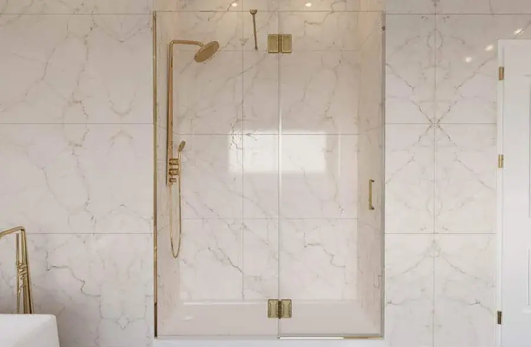
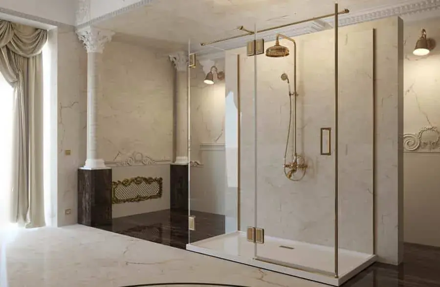
MamparasMamparas de baño Luxury - Lasser
La firma española Lasser, necesita de pocas presentaciones, pues es ampliamente conocida por su capacidad de innovar dentro del mundo de las mamparas.
Fruto de ello y del amplio conocimiento que tienen de este tipo de productos, indispensables hoy en cualquier baño, ha lanzado su nueva colección Luxury, de mamparas para bañera y ducha.
Cuando escuchas la palabra Luxury y la relacionas con una mampara, ¿tú qué te imaginas que vas a ver?
Te ayudamos… Cristal templado de 8 mm, armonía estética, firmeza y estabilidad, practicidad, gran calidad en todos sus componentes, como por ejemplo las bisagras, que cuentan con acabados en opción oro o cromo.
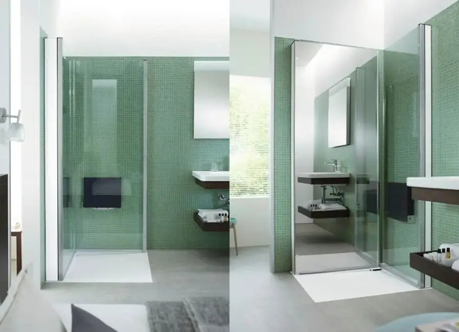
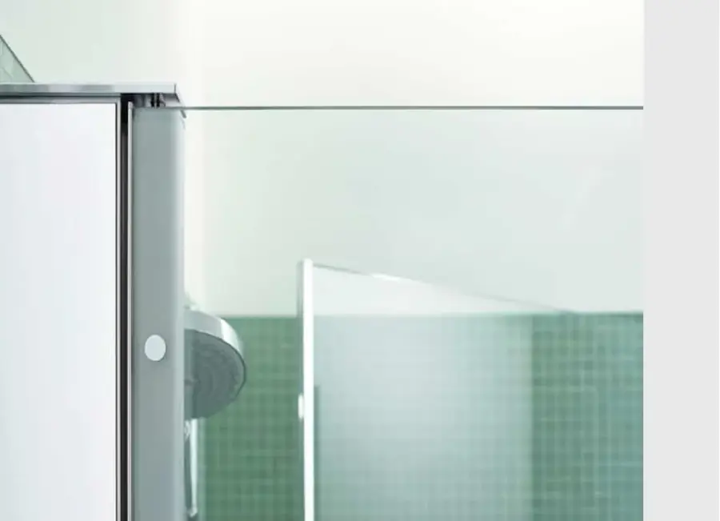
MamparasMampara de ducha Open Space B - Duravit
Duravit sorprende con esta nueva mampara para baños, gracias a la que a diferencia de lo que siempre sucede con este accesorio, ahora podrás incorporarlo y sorprendentemente disponer de más espacio en tu baño.
Su innovador diseño permite que una vez te hayas duchado, la puedas guardar. Se trata de una novedosa idea plasmada con mucho acierto por los diseñadores de EOOS, y en la que la inexistencia del soporte diagonal, es la que facilita esta cómoda usabilidad, la cual además se materializa en un diseño armonioso a base a base de cristal transparente, crista de espejo y aluminio pulido brillante.
Open Space B la tienes disponible en 4 tamaños y 16 variaciones posibles, y todo ello a un precio asequible para lo innovador del concepto.
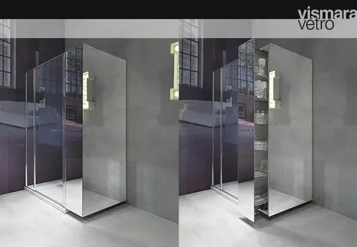
MamparasMamparas de duchas Twin Mini - Vismaravetro
En este caso te hablamos de una colección de mamparas de ducha en las que su simplicidad aporta gran utilidad. Diseñadas para que puedas utilizar mejor el baño, siguiendo las pautas de funcionalidad y confort acordes con el tamaño del mismo.
Twin Mini incorpora mampara de ducha así como un compartimiento extraíble el cual incluye cinco cómodos estantes, colocados en el lado fijo de la mampara, cuyas superficies son reflectantes.
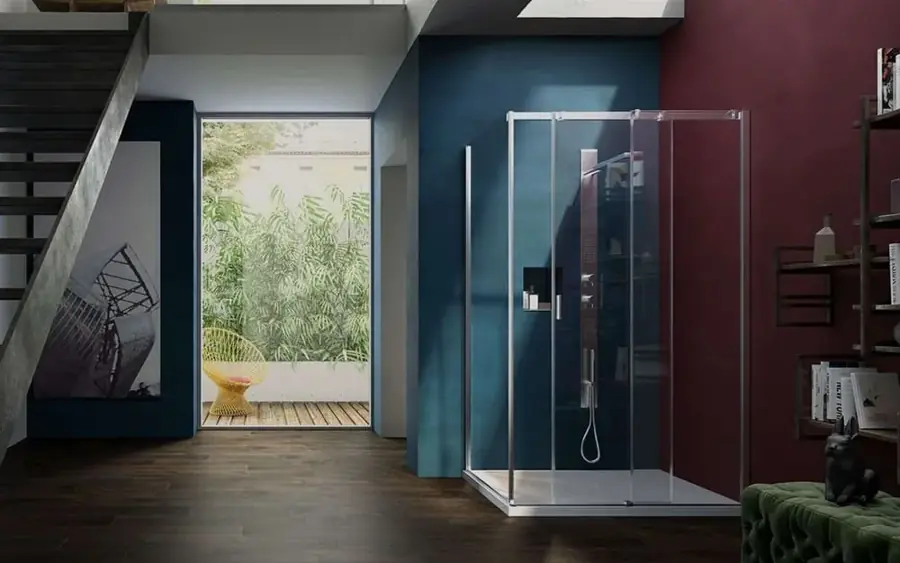
MamparasMampara de ducha deslizante - Vismaravetro
Cuando buscas una mampara para tu ducha, además de cuestiones relacionadas con el diseño, seguro que otros aspectos como su estanqueidad y su funcionalidad son todos ellos importantes para ti.
Con esto en mente Vismaravetro ha presentado su serie de mamparas 8.000, diseños de alta gama, con una altura de 2 mts, óptimas para el día a día, ligeras, correderas y con un precio más atractivo que el de su serie Slide. Un excelente producto fruto de años de investigación siempre pionera.
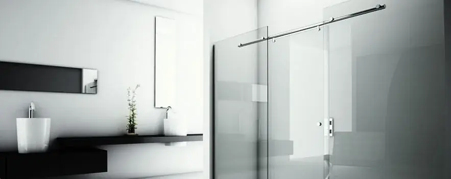
MamparasMamparas para el baño - Iakus
IAKUS, marca especializada en el diseño y la fabricación de herrajes, te ofrece dos grandes divisiones, la del baño y otra de interiorismo. Destacamos su gran interés y sensibilidad por la arquitectura más vanguardista.
Desde sus inicios colabora con arquitectos, ingenieros e interioristas, con el objetivo de anticiparse a las nuevas tendencias formales. La calidad, prestaciones del producto, acabados, detalles y accesorios diferenciadores, son parte esencial de su filosofía, así como la continua investigación para encontrar nuevas soluciones constructivas que le permitan estar siempre en la vanguardia.